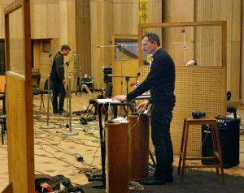

2+2=22 [The Alphabet]

Heinz EmigholzDE 2013-17 – 88 min – German
B: Heinz Emigholz – DOP+E: Heinz Emigholz, Till Beckmann
M: Kreidler – S: Till Beckmann
D: Filmgalerie 451 – With Kreidler, Natja Brunckhorst
The film documents
the genesis of the recordings and production of some music pieces
by the band Kreidler that were released on their album ABC in May
2014. Long, observing filmic shots were taken. The recordings were
made from 8 to 12 October 2013 in the recording studio of the
Georgian film production complex Kartuli Pilmi in Tbilisi,
Georgia. A large, wood-panelled hall outfitted with moveable walls
was used. The room was originally conceived as a recording studio
for a film orchestra; the board of censors used it as an internal
screening room.
About twenty sequences from the documentary footage of the
creation of the music pieces were selected to form the backbone of
the film. Interstitials are added before and between the musical
sequences. These interstitials consist of two components: first,
documentary footage of architectonic situations in Tbilisi; and
second, notebooks leafed through by means of film-technical
animation. The notebooks were written and illustrated by Heinz
Emigholz in the course of one year.
samstag 8 okt 20.30 uhr werkstattkino
Heinz Emigholz * in 1948 near Bremen in Germany, Heinz Emigholz trained first as a draftsman before studying philosophy and literature in Hamburg. He began filmmaking in 1968 and has worked since 1973 as a filmmaker, artist, writer and producer in Germany and the USA. In 1974 he started his encyclopaedic drawing series The Basis of Make-Up . He looks back on numerous exhibitions, retrospectives, lectures and publications. In 1984 he started his film series Photography and beyond. He has held a professorship in Experimental Filmmaking at the Universität der Künste Berlin from 1993 to 2013, and co-founded the Institute for Time-based Media and the program Art and Media, there. Since 2012 member of the Academy of Arts in Berlin.
Werk
Photographie und jenseits 1974-2015 – The Basis of Make-Up I–III
1974-2004 – Miscellanea I–VII 1988–2016 – Architektur als Auto-
biographie 1993–2013
Filme der 2000er Jahre Goff in der
Wüste 2003 – D’Annunzios Höhle 2005 – Loos ornamental 2008 –
Parabeton 2012 (7. UX) – The Airstrip 2014 – Le Corbusier 2015